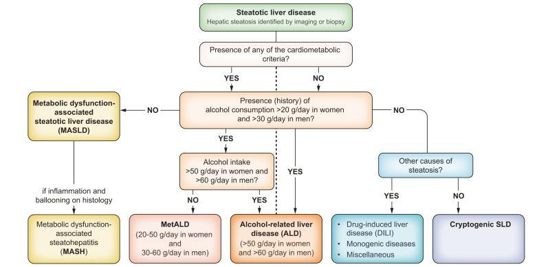

ALD
ALD
Alcohol-Related Liver Disease
Istilah modern pengganti "alcoholic liver disease". Mencakup spektrum kerusakan hati akibat konsumsi alkohol, mulai dari perlemakan sederhana hingga sirosis.
Pelajari penyakit perlemakan hati secara komprehensif — mulai dari definisi modern, faktor genetik, patofisiologi, hingga strategi diagnosis dan penanganannya.

Fatty liver (steatotic liver disease) adalah istilah umum untuk kondisi penumpukan lemak di dalam sel hati. Steatosis hepatik didefinisikan sebagai kandungan lemak intrahepatik setidaknya 5% dari berat hati.
Saat ini, fatty liver tidak lagi dianggap sebagai satu penyakit tunggal, melainkan spektrum besar dengan berbagai penyebab dan tingkat keparahan. Secara modern, fatty liver dibagi menjadi beberapa kategori utama:
Alcohol-Related Liver Disease
Istilah modern pengganti "alcoholic liver disease". Mencakup spektrum kerusakan hati akibat konsumsi alkohol, mulai dari perlemakan sederhana hingga sirosis.
Metabolic Dysfunction-associated SLD
Steatosis hati disertai minimal satu faktor risiko kardiometabolik: obesitas, DM tipe 2, hipertensi, dislipidemia, atau resistensi insulin.
Metabolic Dysfunction and Alcohol-Related Liver Disease
Steatosis yang terjadi pada individu yang memiliki faktor risiko metabolik, tetapi juga mengkonsumsi alkohol dengan jumlah sedang.
Polimorfisme gen tertentu dapat meningkatkan risiko seseorang mengalami fatty liver. Dua gen risk alleles yang telah diidentifikasi:
Varian I148M
Varian ini menyebabkan perubahan fungsi protein yang berperan dalam metabolisme lemak di hati dan jaringan adiposa.
Varian E167K
Varian ini memengaruhi proses sekresi lipid dari hati.
Fatty liver terjadi akibat ketidakseimbangan antara proses masuk, pembentukan, oksidasi, dan pengeluaran lemak di hati.
Peningkatan kadar asam lemak bebas dari jaringan adiposa sebagai sumber utama akumulasi lemak di hati.
Peningkatan pembentukan asam lemak baru di dalam hati melalui proses lipogenesis.
Penurunan proses β-oksidasi mitokondria yang berfungsi membakar asam lemak sebagai energi.
Gangguan sekresi lipoprotein VLDL menyebabkan trigliserida tertahan di dalam hepatosit.
Kondisi ini diperburuk oleh resistensi insulin, yang meningkatkan aliran FFA ke hati serta memperkuat lipotoksisitas.
Akumulasi lemak yang berlebihan memicu gangguan fungsi sel hati melalui disfungsi mitokondria, stres retikulum endoplasma (ER stress), dan peningkatan stres oksidatif.
Kombinasi proses tersebut menyebabkan cedera hepatosit dan memicu respons inflamasi. Sel Kupffer (makrofag hati) teraktivasi dan melepaskan mediator inflamasi, yang kemudian mengaktivasi sel stelata hepatik — berperan penting dalam pembentukan fibrosis sebagai tahap awal menuju sirosis.
Fatty liver merupakan spektrum penyakit yang dapat berkembang dari kondisi ringan hingga berat. Klik gambar untuk memperbesar.

Diagnosis dapat dilakukan melalui pendekatan noninvasif maupun invasif, tergantung indikasi klinis.
Biopsi hati adalah gold standard untuk diagnosis pasti, menilai:

Penanganan bertujuan mencegah progresivitas penyakit hati dan memperbaiki kondisi metabolik yang mendasari (adiposopathy).
Karena MASLD merupakan penyakit multisistem, penanganannya idealnya dilakukan secara multidisiplin — melibatkan ahli gizi, endokrinolog, hepatolog, kardiolog, psikiater, dan rehabilitasi medik.
Dipertimbangkan pada pasien dengan risiko progresi fibrosis, MASH, atau komorbid metabolik tidak terkontrol. Obat disesuaikan kondisi metabolik (diabetes, dislipidemia, obesitas).
Untuk pasien obesitas berat yang tidak respons terhadap perubahan gaya hidup dan terapi obat. Mencakup prosedur pembedahan dan endoskopi.
Latihan aerobik dan anaerobik intensitas sedang (jalan cepat, bersepeda, jogging, latihan kekuatan). Dianjurkan ±45 menit/sesi, 3×/minggu.
Menghentikan/memperlambat progresi penyakit hati, mengurangi risiko fibrosis dan sirosis, serta mengontrol faktor risiko kardiometabolik secara menyeluruh.

Konten ini disusun berdasarkan literatur ilmiah yang telah dipublikasikan.